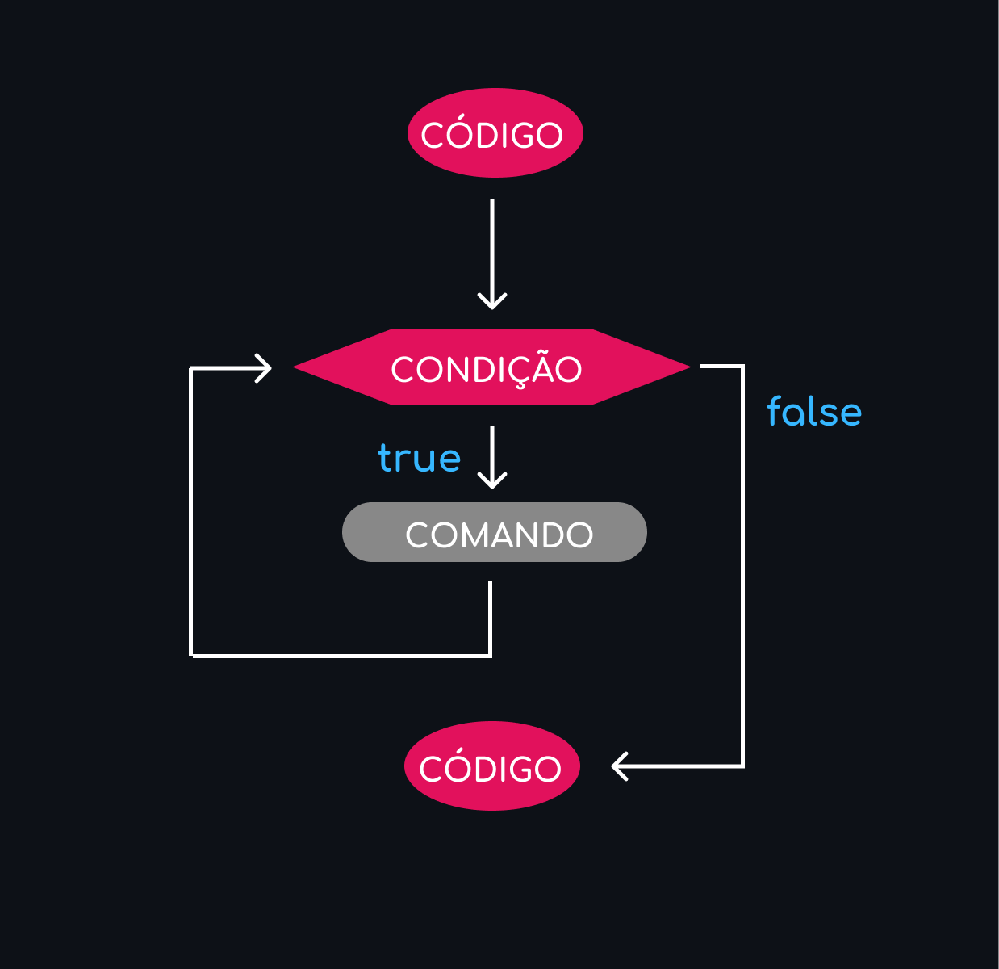
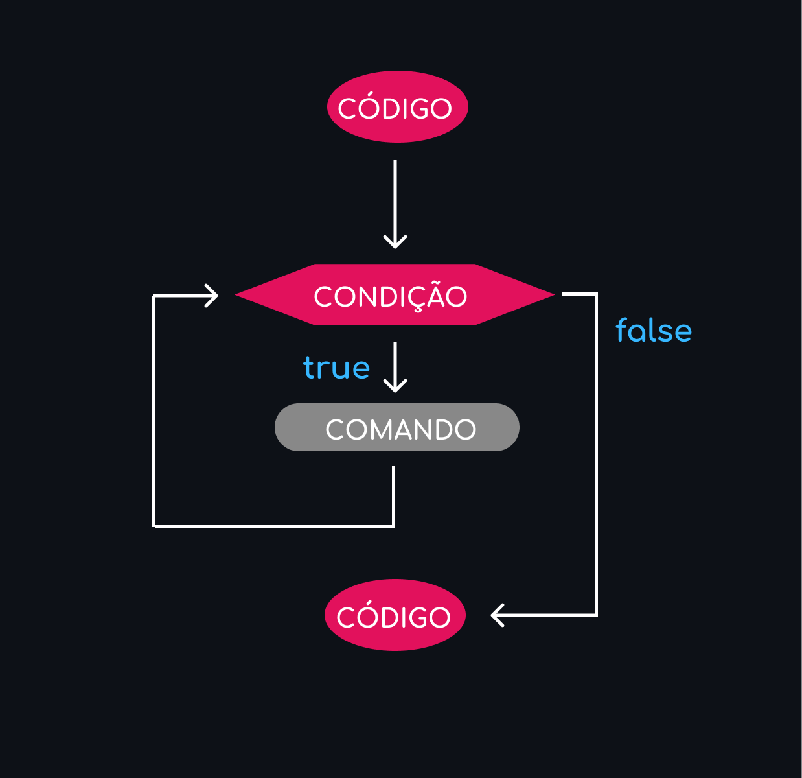

Estruturas de repetição
Utilizamos um laço, também chamado de estrutura de repetição ou loop, quando queremos que algo se repita. Dessa forma, não precisamos ficar escrevendo várias vezes o mesmo código.
Utilizamos um laço, também chamado de estrutura de repetição ou loop, quando queremos que algo se repita. Dessa forma, não precisamos ficar escrevendo várias vezes o mesmo código.
A estrutura de repetição for precisa de:
Se quisermos mostrar no terminal os números de 1 a 5 podemos fazer:
console.log(1)
console.log(2)
console.log(3)
console.log(4)
console.log(5)
Mas com uma estrutura de repetição, fica muito mais simples:
for(let i = 1; i <= 5; i++) {
console.log(i)
}